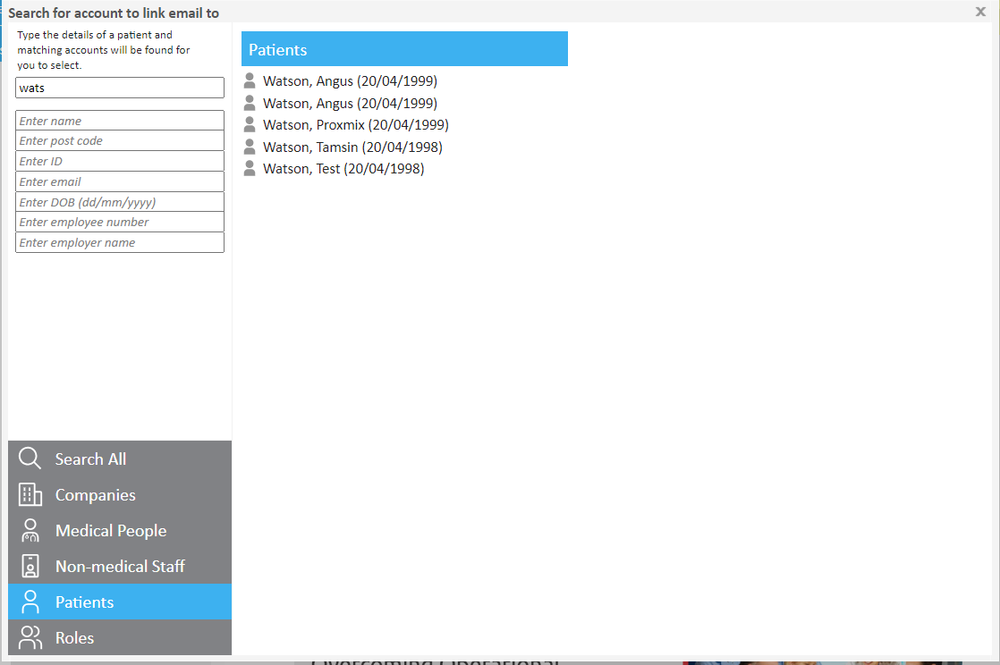
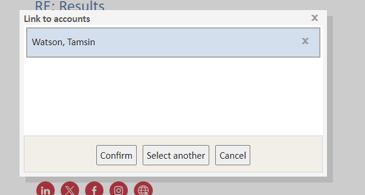
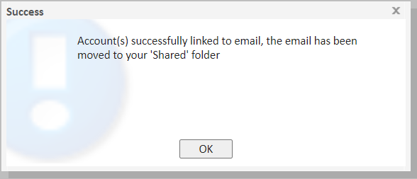
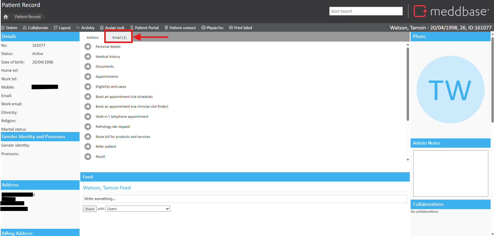
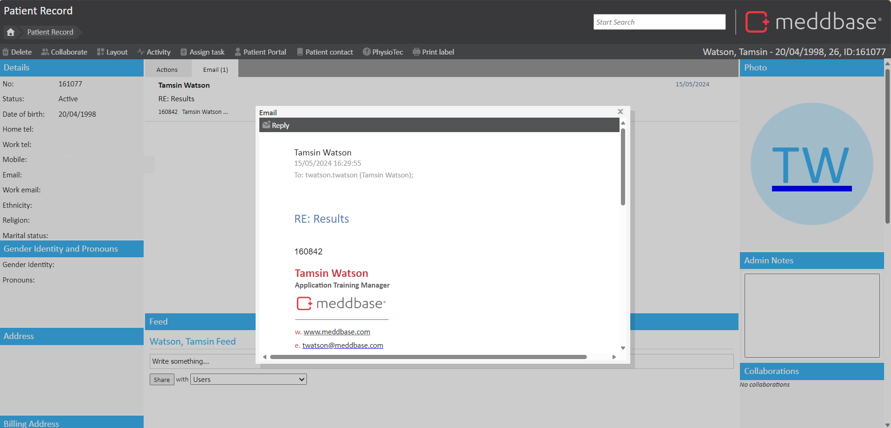
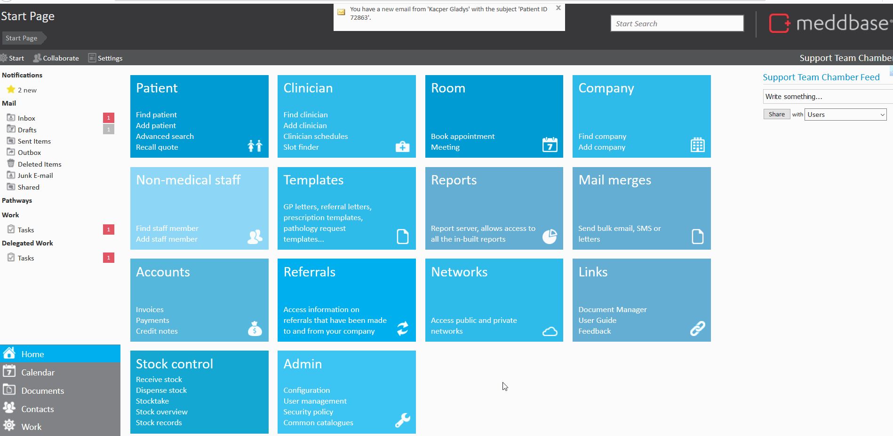

Meddbase allows users to send and receive emails without leaving the application. This helps to save time and ensure the accuracy of information shared. The email function allows for documents to be attached to patient records, and even offers the option to send those documents securely using a validation code sent to the recipient's mobile number, keeping security at the heart of what we do.
Please note, in order to have mail come into the Meddbase system, you need to use the Meddbase email associated with your user profile. The structure for this is username@meddbase.com.
The purpose of the article is to guide you through the ways in which to link an incoming email to a patient record.
In Meddbase, external emails can be received and linked to a patient record. Once linked, these emails moved to a "shared" inbox, meaning users with permission to view the patient record can access all linked emails. Any documents attached to the email thread will also be automatically added to the patient's documents section.
Upon receiving an email you will be alerted by a notification box at the top of the screen, a sound prompting new activity, and a red icon next to your inbox.
This will add the email to the ‘Email’ tab on the patient’s home page, furthermore, any documents attached to the email will also be attached in this patient’s ‘Documents’ section.
Click on the ‘Inbox’ link to go to your inbox and view your new mail. To link this email to a patient record:



If you wish to see the linked email on the patient record, select the Email tab.


Please note this setting needs to be enabled under Admin -> Configuration -> Email -> 'Auto-confirm and attach emails to patient records.'
If the email body contains a patient ID or an Email, opening the email will prompt you to link the email to the patient account.
This will add the email to the ‘Email’ tab on the patient’s home page, furthermore, any documents attached to the email will also be attached in this patient’s ‘Documents’ section.
